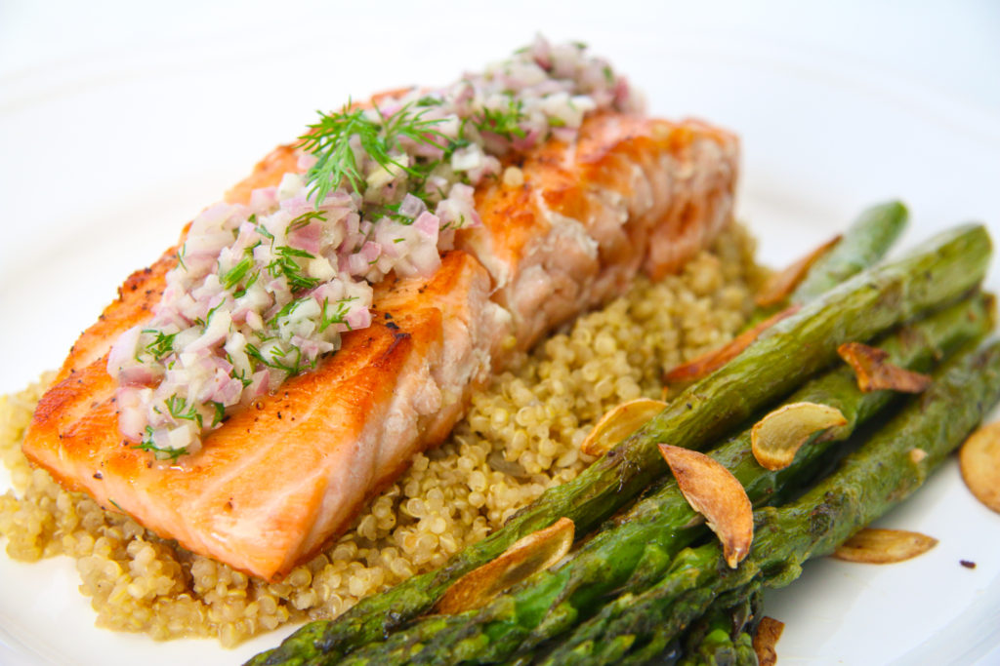

S.A.Q

Ingredients
- Pre-Seasoned Bourbon Marinated Salmon
- 1 cup Asparagus
- 1/2 cup Quinoa
Preparation
- Heat up a pan with olive oil on low heat.
- Add salmon start with skin up, cook each side for 5 mins each until done.
- Season Asparagus with garlic powder, onion powder & lemon pepper
- Roast Asparagus in air fryer at 290° for 25mins.
- Put quinoa in rice cooker and use white rice setting.
- Plate and Enjoy!